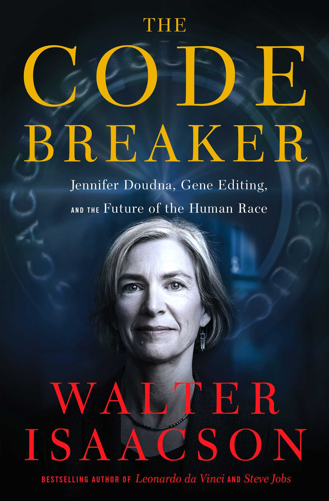

“What is the aim or purpose of life? Is it happiness, contentment, lack of pain or bad mood? If so, then it is easy!”
“If scientists don’t play god, who will?” - James Watson
It may seem like a biography from the cover of the book, but this book is much more than that. It is about the CRISPR technology to edit DNA that received the Nobel Prize 2020 in Chemistry and the lives of 10+ researchers whose work led to the breakthrough. The book is filled with many interpersonal stories and issues involving encouragement, sacrifice, cooperation, competition, trust, betrayal, rivalry, PR fights and patent battles. Gene editing technology has the potential to eradicate many diseases like Huntington's disease, cure particular cancers, produce “designer babies'', create new species or even revive extinct species. Like any powerful technology this comes with large risks like major unintended consequences, taking wealth inequality to a new dimension or biological warfare. “Unnatural Selection” documentary series on Netflix is on this subject that you may also want to check out.
[spoilers removed]
Despite thoroughly enjoying the book, I have a minor and a major criticism for the book. The chapter on Coronavirus seemed like a hasty work and it didn’t gel properly with the rest of the book. Instead of that, I would have preferred to get more details about the non-research aspects such as practical considerations, current state and challenges. The major criticism of the book is that it ends up giving an impression that DNA is a silver bullet and it alone determines many of the traits and doesn’t talk about Epigenetics. It is true that many traits like blood group, blue eye color are solely determined based on a single gene variant but even most of the hereditary traits depend on the environment. For example, a particular variant of the “warrior gene” MAO-A is responsible for a much higher likelihood of violent and aggressive behaviors but only if there was severe childhood abuse. And, humans not only inherit genes like other animals but also the environment in the form of knowledge, traditions and technology and then the combination of genes and this environment ends up deciding the end result. People don’t live up to their genetic potential and providing the “right” environment could help unlock the potential without any gene editing.
Overall, the author has done a marvelous job to research and understand a deeply technical as well as controversial subject and made it a gripping read. Author’s inferences based on interviewees’ body language at places were quite apt to make sense of the conflicted versions. The author’s effort to not just understand researchers’ work but also understand their quirkiness and peculiarities was quite interesting. I generally avoid reading multiple books from a particular author because most authors end up introducing personal biases and ideological inclinations so there is some duplication. But, that wasn’t the case here and the author presented all sides of the arguments objectively so I have already started reading another book from the same author.